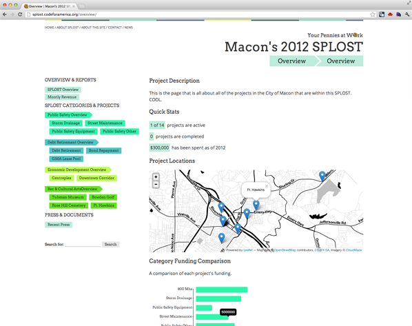
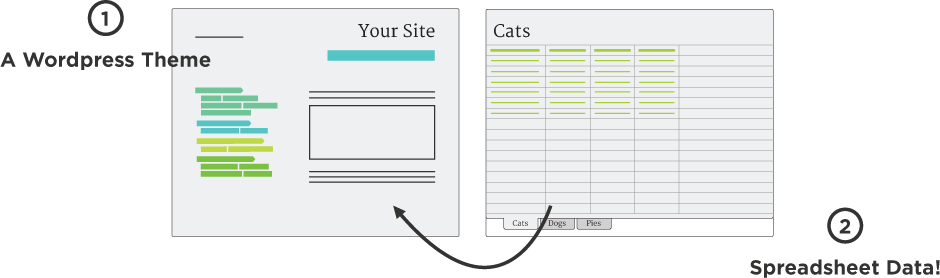

See Penny Work was built with municipal tax referendums in mind. A Wordpress theme + Google Spreadsheet powered visualization kit to make information about your projects and budget clear and accessible through charts, maps, tables, photos, blog posts...

there are two parts
Wordpress Theme & Visualizations
The Wordpress theme, SPLOST, whose namesake is Macon Georgia’s tax referendum, was designed for budgets. You download and install it like any other theme.
The neato data creating the charts, maps and tables is powered by a simple Google Spreadsheet. That’s sheetsee.js.

Want to use it?
Go ahead!
This is an open-source project from Code for America. You can find it and all the documentation (in progress!) you’ll need on Github.
To get it up and running, you’ll need someone with experience in HTML/CSS and JavaScript who can plug in all the right parts. But from that point forward all visualized content is managed through the Google Spreadsheet and page and posts are managed through Wordpress’s easy to use CMS.
If you have more questions about using it in your city just contact info@codeformaerica.org.
About
This is a project of 2012 Code for America fellow Jessica Lord (@jllord) who worked with the city of Macon to create a website for making transparent their own tax-referendums. All of the parts are slowly launching and being refined, but by the end of the fellowship (mid-Nov) it will all be up!
Code for America is a non-profit in San Francisco that each year pairs developers and designers with cities to build better (and open source!) interfaces to government.
And thanks to Jonathan Nicol for his tutorial on parallax scrolling!